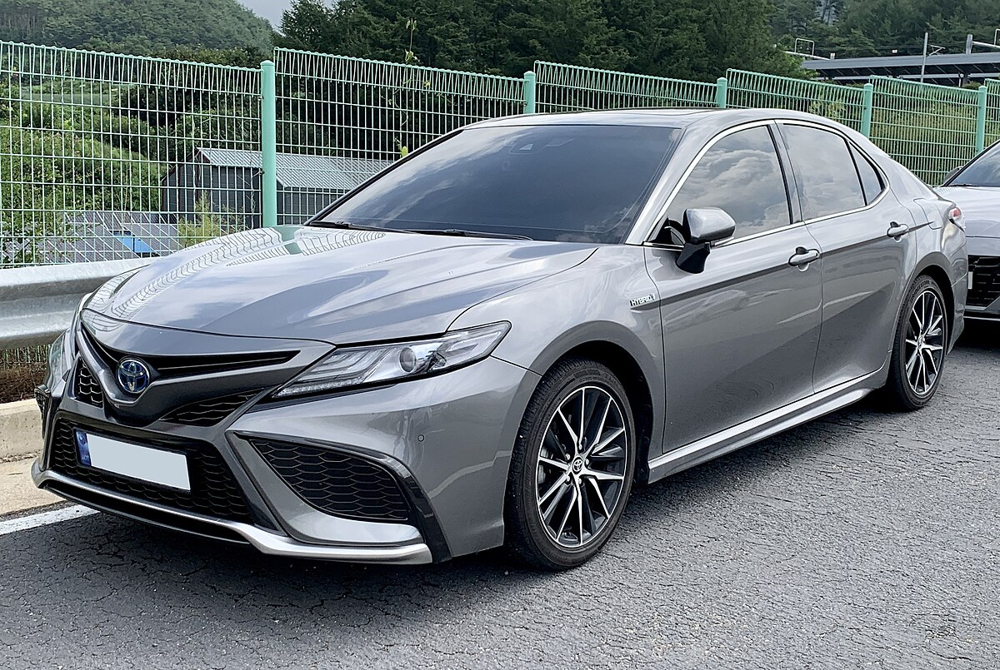
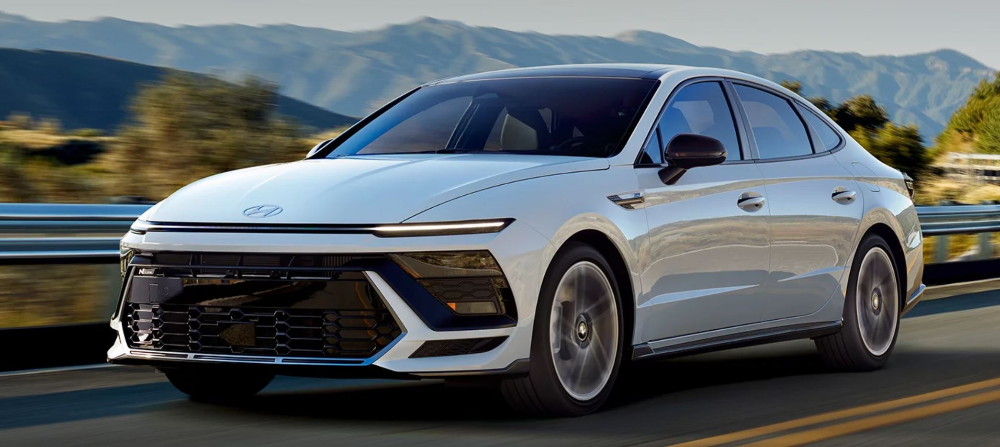
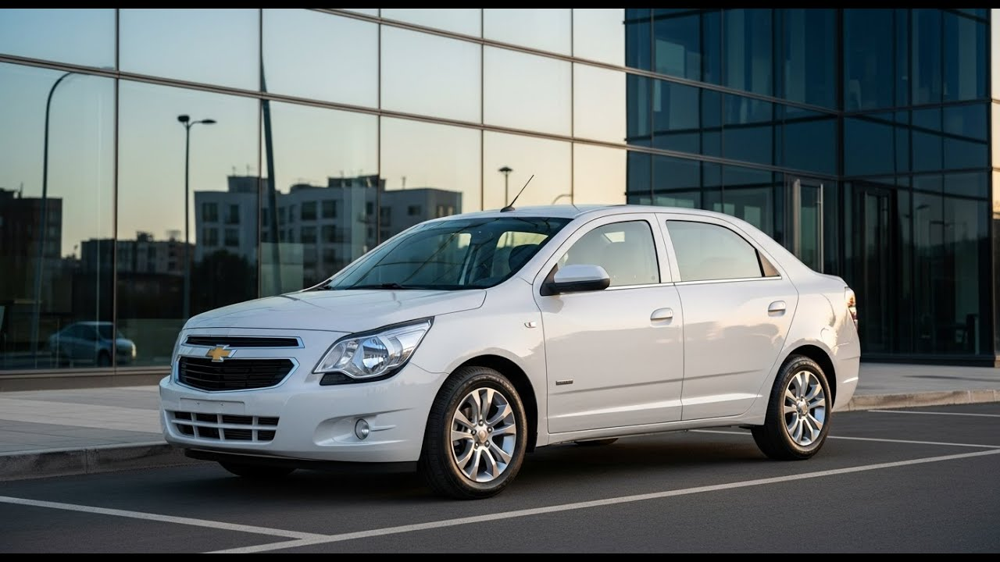

This webpage was created to show which cars are most famous in Kazakhstan
- Toyota camry

- Hyundai Sonata

- Chevrolet Cobalt

Sure the most popular car in Kazakhstan is Toyota Camry, it's car has everything, so many people love it
Click here if you want to learn more about Camry
In my opinion next popular car after Camry is Sonata, I'd say that it's a Korean Camry with the same comfort and drive manageability
Here you find more information about Sonata
And of course our the most popular car around taxi drivers, Chevrolet Cobalt, simple and cheap.
More information about legendary car